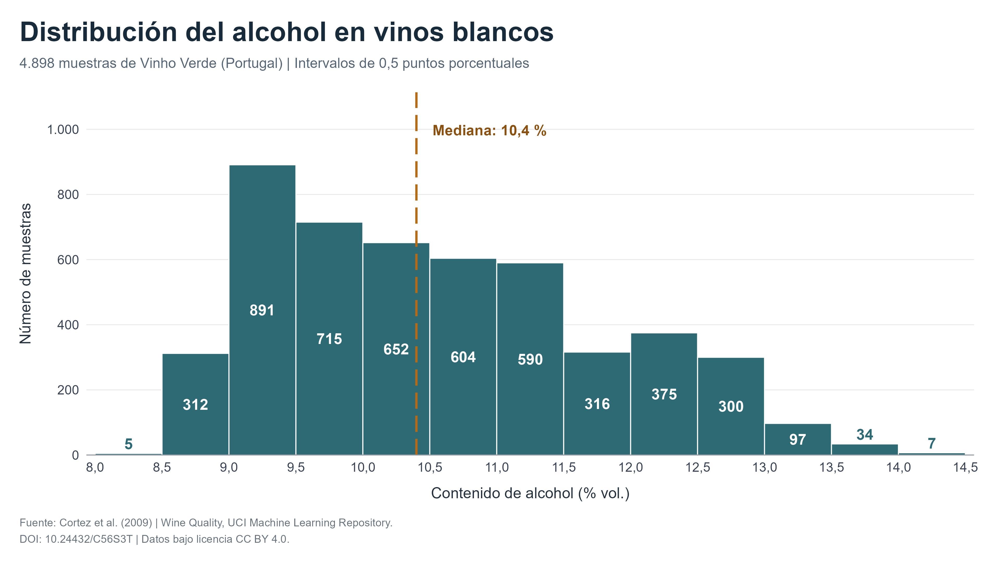
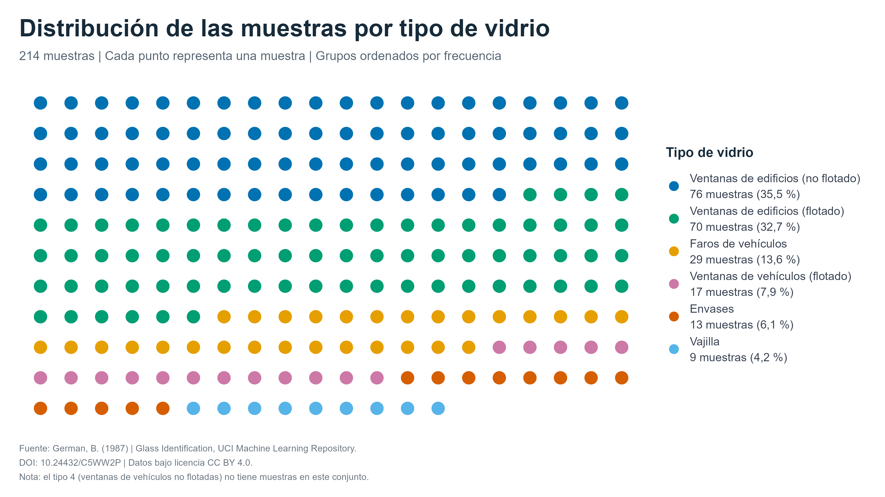
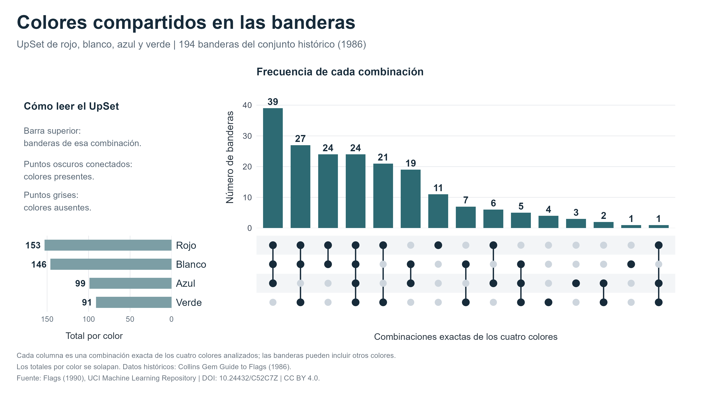

PEC2 · Visualización de datos
Histograma, Dot Matrix Chart y UpSet
1. Histograma: vinos blancos

Abrir a tamaño completo
2. Dot Matrix Chart: tipos de vidrio

Abrir a tamaño completo
3. UpSet: colores de las banderas

Abrir a tamaño completo